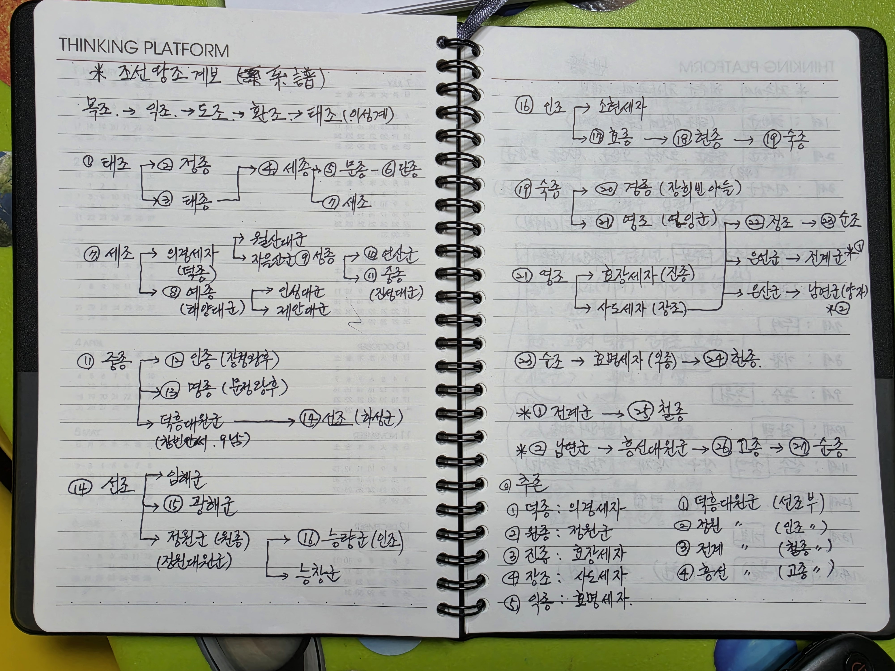
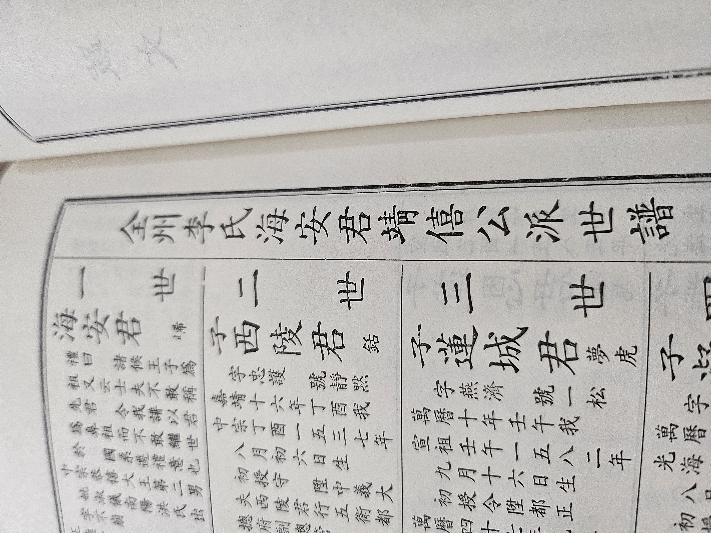
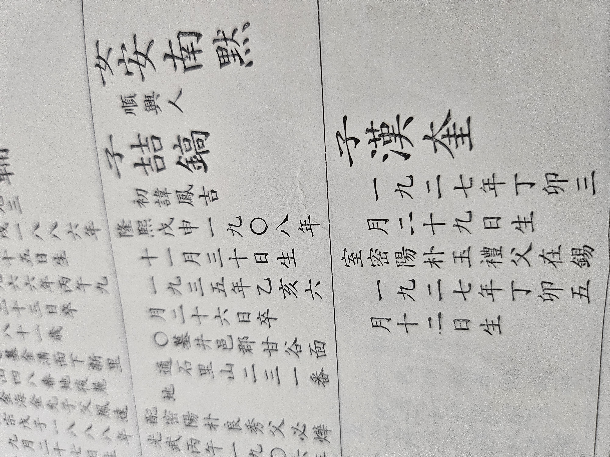
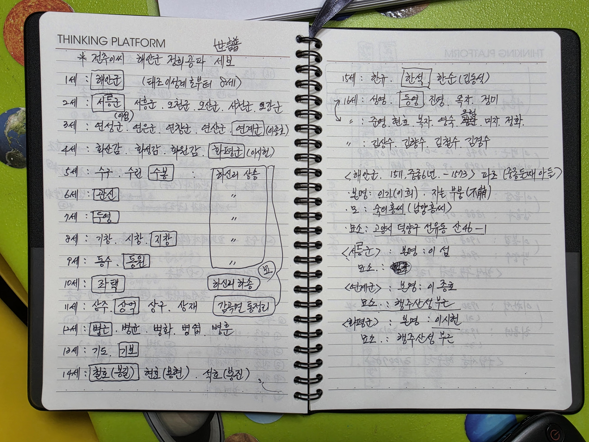
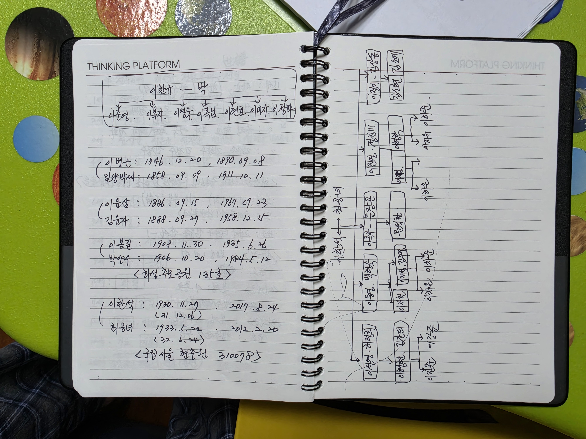

序文 서문
집안에 스프링 노트 한 권이 전해 왔다. 세 펼침면에 조선왕조의 계보와 해안군 정희공파의 세보, 그리고 우리 직계 네 대의 생몰과 묘소가 손글씨로 적혀 있었다. 누가 언제 적었는지는 적혀 있지 않다.
2026년 봄에 그 노트를 사진으로 찍어 웹으로 옮겼다. 그때는 글씨를 잘못 읽은 곳이 많았다. 여름에 노트를 다시 찍어 확대해 가며 처음부터 다시 읽었고, 집안 어른들께 여쭈어 열두 항목을 바로잡았다.
그러다 인쇄된 족보를 찾았다. 『全州李氏 海安君 靖僖公派世譜』 天卷. 노트에 한글로만 적혀 있던 이름들의 한자가 거기 있었다. 열여섯 면을 사진으로 찍어 글자 하나씩 대조했다. 세대마다 이어지는 항렬자가 길잡이가 되었다.
그렇게 채운 것을 다시 종이로 뽑아 손으로 고치고, 고친 것을 또 옮겼다. 이 책은 그 세 겹의 대조를 거친 결과다.
이 책이 딛고 선 자료
| 자료 | 내용 |
|---|---|
| 수기 노트 3펼침면 |
① 조선왕조 계보 ② 해안군 정희공파 세보 1~16세 ③ 직계 12~15세 생몰·묘소와 가계도 |
| 인쇄 족보 16면 |
『全州李氏 海安君 靖僖公派世譜』 天卷. 1세부터 16세까지의 한자 이름·생몰·묘소·배위의 근거 |
| 가족 확인 | 2026년 8월 두 차례. 이름의 한자, 묘소, 날짜의 성격을 어른들께 여쭈어 확정 |
세 겹으로 맞대어 본 것
노트의 한글 이름, 족보의 한자와 생몰, 그리고 가족의 기억. 셋이 맞물리는 곳만 확정했고, 어긋나는 곳은 어느 쪽이 옳은지 밝혀질 때까지 남겨 두었다.
目次 목차
凡例 읽는 법
- 붉은 글씨와 붉은 바탕은 우리 직계다.
- 누런 글씨는 인쇄 족보에서 확인한 한자다. 노트에는 한글로만 있었다.
- 세(世)는 파조 해안군부터 아래로, 대(代)는 나부터 위로 센다. 같은 사람을 두고도 숫자가 다르다.
- 괄호 안의 이름은 같은 세대의 형제다.
- 확인되지 않은 것은 채우지 않고 미상으로 두었다.
13세 기보 基輔 / 윤삼 允三 · 14세 철호 喆鎬 / 봉길 鳳吉 · 17세 형(炯) 계열 / 재(在) 계열이 그렇다.
우리 집안朝鮮王朝 · 海安君

조선왕조 27대
숫자는 왕위에 오른 순서. 붉은 바탕이 우리 집안으로 이어지는 자리다.
| 대 | 묘호 | 재위 | 앞 왕과의 관계 |
|---|---|---|---|
| 1 | 태조 太祖 | 1392~1398 | 이성계 — 조선을 열다 |
| 2 | 정종 定宗 | 1398~1400 | 태조의 아들 |
| 3 | 태종 太宗 | 1400~1418 | 태조의 아들 |
| 4 | 세종 世宗 | 1418~1450 | 태종의 아들 |
| 5 | 문종 文宗 | 1450~1452 | 세종의 아들 |
| 6 | 단종 端宗 | 1452~1455 | 문종의 아들 |
| 7 | 세조 世祖 | 1455~1468 | 세종의 아들 · 수양대군 |
| 8 | 예종 睿宗 | 1468~1469 | 세조의 아들 · 해양대군 |
| 9 | 성종 成宗 | 1469~1494 | 덕종(의경세자)의 아들 · 자을산군 |
| 10 | 연산군 燕山君 | 1494~1506 | 성종의 아들 · 폐위 |
| 11 | 중종 中宗 | 1506~1544 | 성종의 아들 · 진성대군 |
| ★ | 해안군 海安君 (1511~1573) — 중종의 서2남, 숙의 홍씨 소생. 본파의 파조 | ||
| 12 | 인종 仁宗 | 1544~1545 | 중종의 아들 (장경왕후 소생) |
| 13 | 명종 明宗 | 1545~1567 | 중종의 아들 (문정왕후 소생) |
| 14 | 선조 宣祖 | 1567~1608 | 덕흥대원군의 아들 · 하성군 |
| 15 | 광해군 光海君 | 1608~1623 | 선조의 아들 · 폐위 |
| 대 | 묘호 | 재위 | 앞 왕과의 관계 |
|---|---|---|---|
| 16 | 인조 仁祖 | 1623~1649 | 원종(정원군)의 아들 · 능양군 |
| 17 | 효종 孝宗 | 1649~1659 | 인조의 아들 |
| 18 | 현종 顯宗 | 1659~1674 | 효종의 아들 |
| 19 | 숙종 肅宗 | 1674~1720 | 현종의 아들 |
| 20 | 경종 景宗 | 1720~1724 | 숙종의 아들 (장희빈 소생) |
| 21 | 영조 英祖 | 1724~1776 | 숙종의 아들 · 연잉군 |
| 22 | 정조 正祖 | 1776~1800 | 장조(사도세자)의 아들 |
| 23 | 순조 純祖 | 1800~1834 | 정조의 아들 |
| 24 | 헌종 憲宗 | 1834~1849 | 익종(효명세자)의 아들 |
| 25 | 철종 哲宗 | 1849~1863 | 전계대원군의 아들 |
| 26 | 고종 高宗 | 1863~1907 | 흥선대원군의 아들 · 초대 황제 |
| 27 | 순종 純宗 | 1907~1910 | 고종의 아들 · 마지막 황제 |
陵과 墓 능·묘 일람
왕과 왕비의 무덤은 능(陵), 폐위된 임금은 묘(墓)다.
| 대 | 묘호 | 능호 | 위치 |
|---|---|---|---|
| 1 | 태조 | 건원릉 健元陵 | 경기 구리 동구릉 |
| 2 | 정종 | 후릉 厚陵 | 개성(북한) |
| 3 | 태종 | 헌릉 獻陵 | 서울 서초구 내곡동 |
| 4 | 세종 | 영릉 英陵 | 경기 여주 |
| 5 | 문종 | 현릉 顯陵 | 경기 구리 동구릉 |
| 6 | 단종 | 장릉 莊陵 | 강원 영월 |
| 7 | 세조 | 광릉 光陵 | 경기 남양주 |
| 8 | 예종 | 창릉 昌陵 | 경기 고양 서오릉 |
| 9 | 성종 | 선릉 宣陵 | 서울 강남 선정릉 |
| 10 | 연산군 | 연산군묘 | 서울 도봉 |
| 11 | 중종 | 정릉 靖陵 | 서울 강남 선정릉 |
| ★ | 해안군 — 고양시 덕양구 선유동 산46-1 | ||
| 12 | 인종 | 효릉 孝陵 | 경기 고양 서삼릉 |
| 13 | 명종 | 강릉 康陵 | 서울 노원구 공릉동 |
| 14 | 선조 | 목릉 穆陵 | 경기 구리 동구릉 |
| 15 | 광해군 | 광해군묘 | 경기 남양주 |
| 16 | 인조 | 장릉 長陵 | 경기 파주 |
| 17 | 효종 | 영릉 寧陵 | 경기 여주 |
| 18 | 현종 | 숭릉 崇陵 | 경기 구리 동구릉 |
| 19 | 숙종 | 명릉 明陵 | 경기 고양 서오릉 |
| 20 | 경종 | 의릉 懿陵 | 서울 성북 석관동 |
| 21 | 영조 | 원릉 元陵 | 경기 구리 동구릉 |
| 22 | 정조 | 건릉 健陵 | 경기 화성 융건릉 |
| 23 | 순조 | 인릉 仁陵 | 서울 서초구 내곡동 |
| 24 | 헌종 | 경릉 景陵 | 경기 구리 동구릉 |
| 25 | 철종 | 예릉 睿陵 | 경기 고양 서삼릉 |
| 26 | 고종 | 홍릉 洪陵 | 경기 남양주 홍유릉 |
| 27 | 순종 | 유릉 裕陵 | 경기 남양주 홍유릉 |
追尊王과 大院君
추존왕 5위
왕이 되지 못하고 죽은 뒤에 왕의 칭호를 올린 이들이다.
| 추존 묘호 | 본래 신분 | 관계 |
|---|---|---|
| 덕종 德宗 | 의경세자 | 세조의 아들 · 성종의 아버지 |
| 원종 元宗 | 정원군 | 선조의 아들 · 인조의 아버지 |
| 진종 眞宗 | 효장세자 | 영조의 아들 · 정조의 양부 |
| 장조 莊祖 | 사도세자 | 영조의 아들 · 정조의 생부 |
| 익종 翼宗 | 효명세자 | 순조의 아들 · 헌종의 아버지 |
대원군 4위
왕이 된 아들을 둔 생부에게 준 칭호다.
| 대원군 | 아들(왕) |
|---|---|
| 덕흥대원군 德興 | 제14대 선조 |
| 정원대원군 定遠 | 제16대 인조 (뒤에 원종으로 추존) |
| 전계대원군 全溪 | 제25대 철종 |
| 흥선대원군 興宣 | 제26대 고종 |

우리 집안 한눈에 보기
조선을 연 태조로부터 여덟 번째가 파조 해안군이고, 해안군을 1세로 하여 오늘의 18세까지 이어진다.
1~9세1 해안군 → 2 서릉군 → 3 연계군 → 4 화평군 → 5 수봉 → 6 관신 → 7 두영 → 8 지창 → 9 동원
10~18세10 좌택 → 11 상억 → 12 병근 → 13 윤삼 → 14 철호(봉길) → 15 한석 → 16 동영 → 17 재성 → 18 차은 · 차준
이름에 붙는 行列字 항렬자
같은 세대는 이름에 같은 글자를 쓴다. 이름만 보아도 몇 세인지 알 수 있고, 인쇄 족보를 판독할 때 가장 확실한 단서가 되었다.
| 3세 | 4세 | 5세 | 8세 | 9세 | 10세 | 11세 |
|---|---|---|---|---|---|---|
| 虎 | 花 | 壽 | 昌 | 東 | 宅 | 尙 |
| 호 | 화 | 수 | 창 | 동 | 택 | 상 |
| 12세 | 13세 | 14세 | 15세 | 16세 | 17세 | 18세 |
|---|---|---|---|---|---|---|
| 炳 | 基 | 鎬 | 漢 | 榮 | 炯 | 埈 |
| 병 | 기 | 호 | 한 | 영 | 형 | 준 |
派祖 海安君 파조 해안군
| 생몰 | 1511년(중종 6년) ~ 1573년 |
|---|---|
| 본이름 휘 諱 | 이기(李㟓)가 본디 이름이며, 같은 글자를 달리 읽어 '이희'로도 불린다 |
| 자 字 | 부붕(不崩) |
| 어머니 | 숙의 홍씨(남양 홍씨) — 중종의 서(庶)2남이라 '대군'이 아니라 '군'이다 |
| 봉작 | 1518년 해안군에 봉해졌다 |
| 시호 諡號 | 정희(靖僖) — 1788년(정조 12) 하사. 이 파를 정희공파라 부르는 유래다 |
| 묘소 | 고양시 덕양구 선유동 산46-1 |
| 자손 | 6남 4녀를 두었다고 전한다. 세보의 2세 여섯 군(서릉군~오강군)과 맞물린다 |
世譜 1세 ~ 4세
世譜 5세 ~ 9세
世譜 10세 ~ 13세
世譜 14세 ~ 18세

親族 家系圖 친족 가계도
이한석 · 최공녀(15세)의 자손 전체. ⚭ 는 부부를 뜻한다.
이한석의 형제자매 — 15세
| 관계 | 부부 | 자녀 |
|---|---|---|
| 이한석의 형 | 이한규 漢奎 ⚭ 박옥례 密陽朴氏 |
이준영 駿榮 · 이복자 · 이영숙 · 이옥님 · 이현호 虎榮(초명 顯虎) · 이미자 · 이정화 貞和 |
| 이한석의 누이 | 이한순 ⚭ 김동석 |
김상수 · 김향수 · 김철수 · 김경수 |
이한석 · 최공녀의 5자녀 — 16세
| 차례 | 부부 | 자녀 |
|---|---|---|
| 장남 | 이성영 城榮 ⚭ 허경희 | 이형현 |
| 차남 · 직계 | 이동영 銅榮 ⚭ 백현숙 | 이재헌 · 이재성 |
| 장녀 | 이옥자 玉子 ⚭ 문왕곤 | 문석환 |
| 삼남 | 이진영 振榮 ⚭ 정진미 | 이재일 · 이형학 |
| 차녀 | 이정미 貞美 ⚭ 김상동 | 김소현 · 김소예 |

족보에서 쓰는 말
왕실에서 쓰는 말
벼슬 · 묘소 · 날짜

원본 자료와 판독 방법
원본 자료
| 자료 | 내용 |
|---|---|
| 수기 노트 3펼침면 reference/01~03 |
① 조선왕조 계보 ② 세보 1~16세 ③ 직계 12~15세 생몰·묘소와 가계도 |
| 인쇄 족보 16면 reference/jokbo_01~16 |
『全州李氏 海安君 靖僖公派世譜』 天卷. 파일명의 genNN-NN 은 그 면에 실린 세대 범위다 |
판독 방법
- 4000×3000 원본에서 세대별 이름 영역만 확대해 글자 단위로 대조했다.
- 세대마다 이어지는 항렬자와, 수기 노트의 한글 이름·생몰일이 서로 맞물리는지 교차 검증했다.
- 판독하지 못한 글자는 억지로 채우지 않고 비워 두었다.
대조·확인 이력
| 때 | 한 일 |
|---|---|
| 2026. 05 | 수기 노트를 웹 족보로 1차 디지털화 |
| 2026. 08. 29 | 노트 재촬영 · 전면 재판독 · 가족 확인 12항목 |
| 2026. 08. 30 | 인쇄 족보 16면 판독 → 1~16세 한자 확보 |
| 2026. 09. 05 | 종이 교정본을 반영해 이름 한자와 묘소를 바로잡음 |
아직 채우지 못한 것
알 수 없는 자리는 알 수 없는 채로 두었다. 뒷사람이 채워 넣을 자리다.
| # | 항목 | 지금까지 알아낸 것 |
|---|---|---|
| 1 | 서릉군(2세) 묘소 | '고양시'까지 확인. 번지는 알지 못한다 |
| 2 | 2~4세 휘의 한자 | 2세는 섬(銛)으로 확인했다. 3·4세는 판독값이라 재확인이 필요하다 |
| 3 | 3세 연계군의 생몰 | 족보에 9월 17일만 있고 연도가 없다 |
| 4 | 8세 지창의 생몰 | 이름이 지면 맨 아랫줄에 있어 생몰이 다음 면으로 넘어간다. 촬영 범위 밖이다 |
| 5 | 12세 배위의 이름 | 본관 밀양박씨만 적혀 있고 이름은 족보에 없다 |
| 6 | 17세 세대의 배우자 | 문석환 · 이재일의 배우자를 아직 적지 못했다 |
전주이씨대동종약원 「해안군파 약사」
맺으며
이 책에 적힌 것은 대부분 남이 적어 둔 것을 옮긴 것이다. 노트를 적어 둔 이가 없었다면, 인쇄 족보를 간수해 온 이가 없었다면 여기 남은 이름들은 벌써 사라졌을 것이다.
열여덟 대를 거슬러 올라가면 1511년에 태어난 한 사람에게 닿는다. 그 사이에 이름만 남고 아무것도 남지 않은 대(代)가 여럿이다. 그래도 이름이 남았다는 것이 적은 일은 아니다.
모르는 것을 모른다고 적어 두는 일도 기록이라고 생각했다. 뒤에 이 책을 손에 든 사람이 빈자리를 하나라도 채워 준다면 그것으로 이 책은 제 몫을 한 셈이다.
github.com/NameJaesung/family-genealogy
- 엮은이
- 十七世 이재성
- 엮은 때
- 2026년
- 바탕 자료
- 가전 수기 노트 3펼침면
인쇄 족보 『全州李氏 海安君 靖僖公派世譜』 天卷 16면 - 판형
- A5 · 148 × 210mm · 본문 36면
- 전자판
- github.com/NameJaesung/family-genealogy
이 책은 집안에서 나누어 보기 위해 엮은 것이다. 살아 있는 가족의 이름과 생년월일이 실려 있으므로 바깥으로 돌리지 않는다.